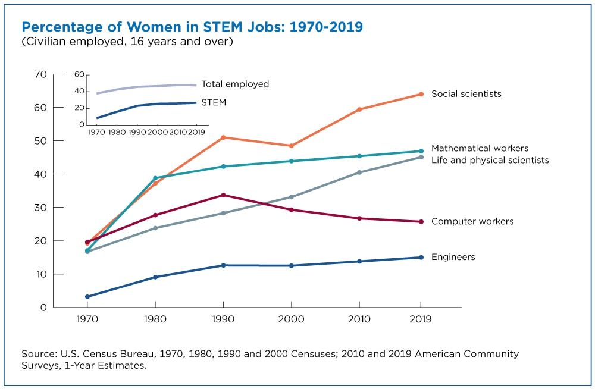
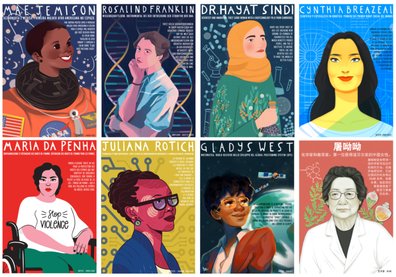

¿Qué está pasando?

Para nadie es un secreto que a día de hoy, hay una gran falta de mujeres en la ingeniería. Como parte de una institución educativa de nivel superior, la realidad que vemos día tras día confirma que a pesar de la enorme cantidad de gente que estudia alguna ingeniería, el porcentaje de mujeres en estos programas es alarmantemente bajo. Este hecho plaga no solo el entorno educativo sino el laboral, y es innegable que la falta de formación de mujeres en áreas de ingeniería ha contribuído a generar un ciclo vicioso en el que el mercado tiene una grave falta de representación y a su vez se encarga de no dar los incentivos necesarios para revertir el problema.
Sin embargo, y aunque el ámbito de la ingeniería es uno de los ejemplos más exagerados de la problemática, sería deshonesto hablar de la disparidad de género en el área como un problema único de la ingeniería, o incluso de un termino que encompase mucho más, como podría serlo el área STEM. Dada la naturaleza de nuestra sociedad, no es ni extraño ni inesperado ver que en la mayoría de carreras profesionales se puede encontrar una tendencia hacia un género o hacia otro. ¿Quién no ha oído hablar alguna vez de como la pedagogía es un trabajo de mujeres? ¿Quién no asocia el trabajo de un astronauta con un hombre de manera inconsciente? Aún más interesante, ¿cuando se menciona la palabra "médico" para referirse a un profesional, por qué se piensa automáticamente en un hombre?
Este último ejemplo despierta mi curiosidad por dos principales motivos. Primero, es el ejemplo perfecto de como nuestra sociedad está llena de sesgos, aunque sean de manera incosciente, y como incluso una profesión en la que el género del profesional no es directamente específicado solo con su título, es clara una tendencia social a pensar uno de ellos. Y segundo, de entre todos los ejemplos mencionados, es el único que no tiene ninguna base estadística. ¿Le sorprendería saber que, de hecho, en el área de la medicina hay tan solo un 51% de hombres respecto al 49% restante de mujeres? Nuestra sociedad piensa, sin lugar a dudas, con el género en mente, y como tal, los roles de género permean no solo nuestra la dimensión social, sino la profesional y cultural a un nivel intrínseco.
No es una coincidencia que, históricamente, aquellos sectores con peor prestigio sean los mismos sectores que se consideran comúnmente femeninos. No es una coincidencia que, cuando se piensa en la ingeniería, se piensa en desafíos, en trabajo duro, en el orgullo inherente a ser exitoso en una labor que muchos otros han mistíficado como algo de una dificultad exagerada, de igual forma que no lo es que al pensar en gastronomía se piense en facilidad, en una pérdida de tiempo, en un trabajo de menor importancia. Lo peor de todo es que, de igual forma que nos hemos empeñado en asignar valor a labores según el género de aquellos que más los desempeñan, nos hemos asegurado de que las labores asociadas a un género se queden estrictamente con ese género y que la idea se perpetúe desde el principio en los más jóvenes.
Así, es claro que el problema que hoy nos ocupa es de dimensiones mucho más profundas que solo del ámbito de la ingeniería. Es difícil hablar de problemas tan estructurales de nuestra sociedad, por lo que para este comentario quiero centrar la discusión un poco más en las implicaciones que esto tiene puramente en el área STEM y en la manera en la que se podría generar un cambio positivo.
¿Que piensa la gente?

Para fundamentar la discusión de la problemática en datos reales, se llevó a cabo una exploración sobre el tema en diversos artículos y estadísticas que, efectivamente, prueban la grave falta de mujeres en el sector. Los números son bastante uniformes cuando se comparan entre países, con desviaciones que, en general, resultan en un promedio muy parecido a los datos encontrados en Colombia. En los últimos 5 años, las mujeres han representado tan solo el 25% de los trabajos STEM en Colombia, y se reportan índices más bajos, del 19%, respecto a la representación femenina en áreas relacionadas a la computación. Incluso dentro del estigma que existe respecto a las mujeres y la ingeniería, parece ser que la informática ha pasado de ser una labor principalmente femenina a casi exclusivamente masculina, y son pocas las mujeres que actualmente deciden estudiarla.
Un detalle importante de notar, es que desde que la informática empezó a ser un área propia de los hombres, no se ha visto un aumento significativo de las mujeres en el campo, y los datos no indican que en e futuro cercano vayan a cambiar las tendencias.
Con una idea formada, quiero pasar ahora a la segunda labor de investigación que se llevó a cabo. Ya que los principales hechos, junto a sus causas y consecuencias se tienen más claro, quiero acercar la problemática desde aquel distante problema del que se puede leer en artículos, a la percepción que nosotros mismos, estudiantes de ingeniería, tenemos sobre el tema. Para ello, se desarrolló una breve encuesta en la herramienta gratuita KoBo Toolbox en la que se esperaba medir, entre otras cosas, la perspectiva que se tiene acerca del problema, de sus causas, de lo que debería hacerse al respecto y, por supuesto, una breve comparación a la realidad personal de los encuestados.
La encuesta en cuestión es la que se encuentra a continuación:
Algunos de los datos más interesantes recogidos se encuentran a continuación:
Relevancia dada a diferentes factores según su peso como causas de baja participación femenina en la ingeniería.
La primera tabla se centra en la percepción que tienen los encuestados sobre los motivos que pueden haber causado el problema que nos ocupa. Como se puede ver, en general la gente no piensa que la falta de capacidades sea un factor decisivo, puntuando un valor por debajo del 1, y se atribuye mayor peso a los estereotipos. En cierto modo, los estereotipos de género son quienes generan, de forma indirecta, que los demás factores se manifiesten, por lo que tiene sentido que sea el factor más contribuyente.
En cuanto a las formas de incentivar la participación femenina (cosa que un 86% de los encuestados concuerda, es importante hacer), la mejor opción es normalizar y visibilizar a la mujer en el campo mediante esfuerzos sociales. Como lo dice Ricardo Pérez en su artículo sobre el tema, los niños y niñas de las nuevas generaciones crecen rodeados por juguetes que parecen decirles que profesiones están bien para ellos, y constantemente ven esas mismas ideas confirmadas por la falta de representación de cualquiera de los géneros en campos específicos. Cambiar la manera en la que presentamos profesiones desde un primer momento, ya sea desde el hogar o la escuela, podría ayudar mucho a diversificar todos los campos laborales.
Medidas más populares para incentivar la participación femenina en la ingeniería.
Número de mujeres en áreas STEM que conocen los encuestados.
Para finalizar, podemos comparar todos los datos vistos hasta ahora con la realidad personal de los encuestados. Efectivamente, podemos ver que la gran mayoría de ellos conoce 3 o menos mujeres que sean profesionales o se estén formando en campos STEM (fuera de la universidad, claramente). Es sin embargo sorprendente para mí que el 20% de los encuestados conzocan a más de 15 mujeres en el área, y lo considero prueba de que, incluso cuando las mujeres pueden formar parte de la comunidad, su trabajo es, de cierta forma, invisibilizado para el público general.
Creo que es importnte mencionar que, a pesar de que se preguntó el género del encuestado para comparar posibles sesgos implicitos en no vivir la problemática de primera mano, no hubo ninguna distinción discernible en cuanto al entendimiento de la problemática, sus causas y las maneras en las que puede fomentarse el cambio.
Ahora bien, con toda esta información me gustaría discuitr un poco más acerca de lo que se puede hacer para integrar a la mujer en la ingeniería y el porqué es siquiera importante.
¿Qué significa esto?
Bueno, ahora que se entiende mucho mejor el problema a profundidad, me gustaría hacer una pregunta. ¿Por qué importa? ¿Por qué importa que haya una baja representación femenina si, al final del día, el trabajo de ingeniería se sigue haciendo?
Para mí, la respuesta siempre ha sido un simple hecho, y es la falta de visión que conlleva la disparidad. Las personas son, desde luego, libres de escoger lo que quieran para hacer con sus vidas, pero sin embargo, eso no quita que, entre más diversidad haya en un espacio, en especial uno laboral, habrán, en general, mejores resultados. No me refiero solo a la calidad humana de una empresa, que desde luego es importante y se ve fomentada por la diversidad de sus propios empleados, sino a nivel estructural, a nivel usuario, a nivel diseño, donde tener la mayor cantidad de mentes, de la mayor cantidad de sitios diferentes, con las historias más únicas posibles, asegura una visión mucho más global para enfrentar cualquier problema.
Como ingenieros, esto es especialmente cierto para nuestros campos. La ingeniería es una de las áreas que más afecta la calidad de vida de las personas en una sociedad, y es nuestro constante deber tener en mente al usuario, a aquel por quién nos dedicamos a hacer lo que hacemos. ¿Cómo se puede esperar que un ingeniero afronte correctamente un reto técnico si no conoce a profundidad los objetivos que debería priorizar y las herramientas que puede usar para ello? Puede parecer un ejemplo algo disconexo, pero la realidad es exactamente esta. Cuando dedicamos nuestro tiempo a diseñar soluciones para las personas, es imperativo que consigamos entender a la mayor cantidad de individuos posibles a fin de conseguir un producto colectivo, que sirva de igual forma para mejorar la vida de todo el que lo use.

Es por esto que es trágico que en las carreras STEM la mujer tenga un rol tan diminuto. Cuando, como sociedad, no permitimos a un grupo que representa al 50% de la población mundial entrar a nuestras mesas de diseño, a nuestras investigaciones, a nuestras juntas directivas, lo que hacemos es asegurar que parte de la población que debería ser beneficiada por nuestra labor sea excluída.
Mientras enseñemos a nuestros niños que deben escoger una progesión sobre otra solo por su género, nos aseguraremos de dividir la brecha aún más. Mientras estemos contentos con permitir que el talento de millones de niños se vea desperdiciado porque la sociedad los juzagará si no es lo que socialmente se espere de ellos, entonces nos perderemos de todos los descubrimientos que habrían sido posibles de haber permitido a cada quien desempeñarse en lo que más le habría gustado de vivir en un mundo sin prejucios. La ingeniería, y el progreso mismo, son los principales afectados de negarle a las mujeres un puesto en su desempeño, y es por esto que debería preocuparnos su baja participación.
Y aún con todo esto dicho, ¿qué hay realmente para hacer? La actualidad parece fatalista, y el cambio casi imposible, pero no lo es. Debemos empezar por ser conscientes del problema. Solo cambiando nuestras realidades personales se puede conseguir cambiar la sociedad entera. Hay que rechazar la ideas ya viejas de que la predominancia masculina se debe a que somos capaces de algo de lo que las mujeres no son, y aceptar a mujeres en posiciones de poder convencionales. Si promovemos la verdadera igualdad una vez seamos profesionales en nuestros campos, entonces podremos empezar a ver el cambio, y contribuiremos positivamente a conseguir la paridad de género en la ingeniería.
Muchas gracias por leer.